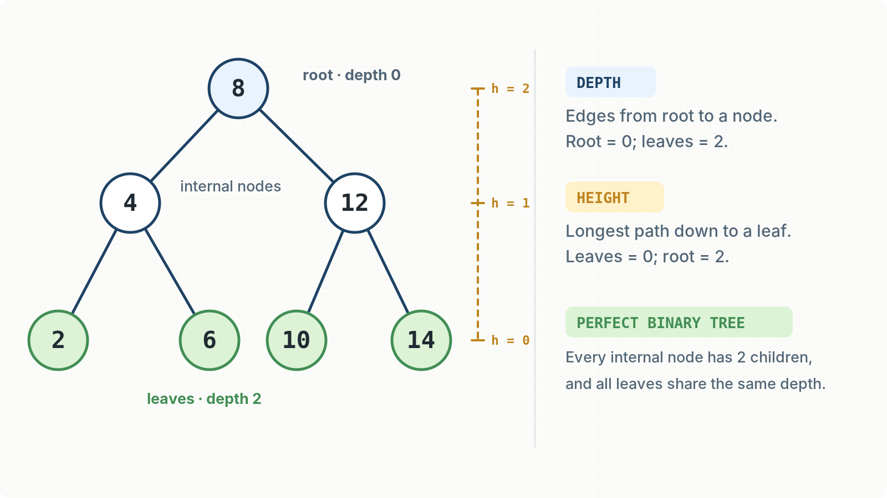
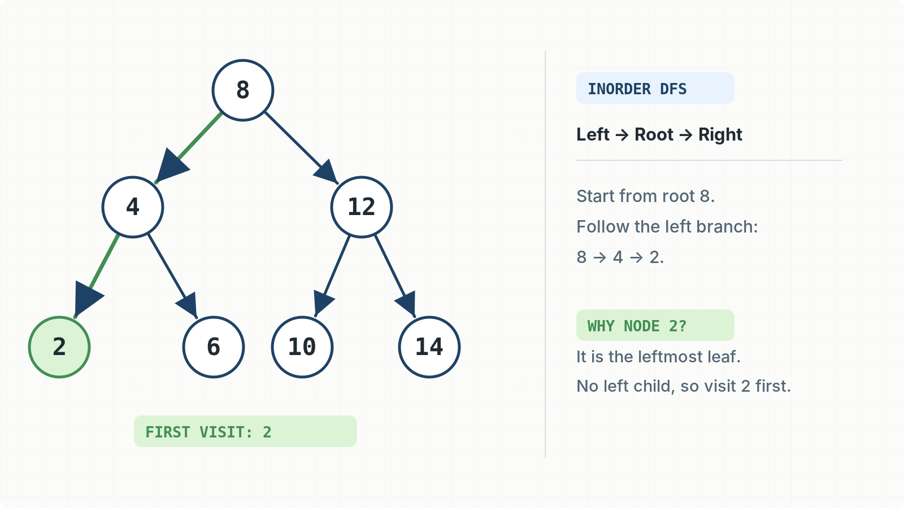
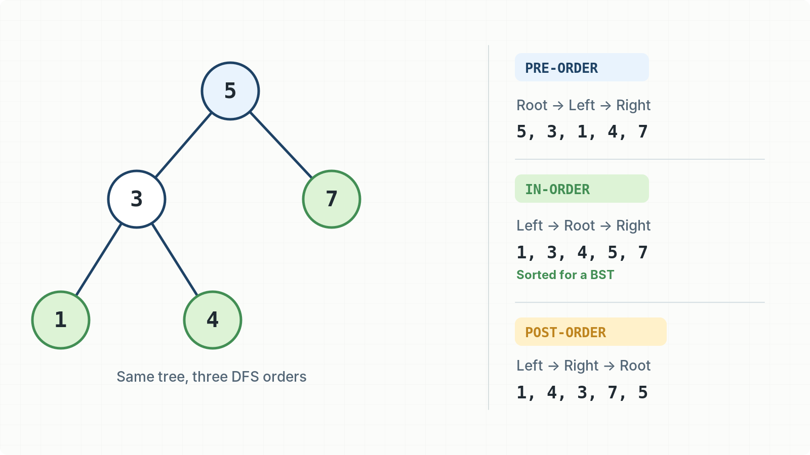
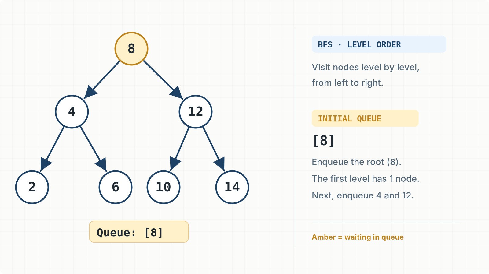
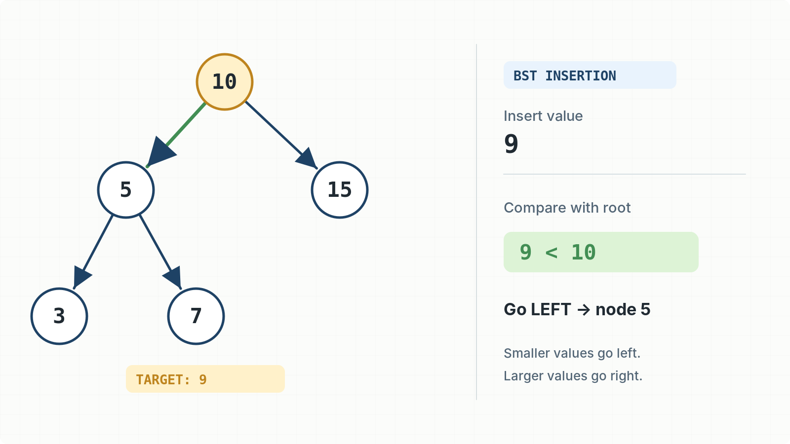

Trees & Binary Search Trees
A tree is a linked structure where every node has a parent except one root — but what makes it powerful for interviews is its recursive shape: every subtree is itself a tree. Mastering the three DFS orders, BFS level-order, and the BST ordering invariant is the foundation for nearly every hard tree problem that follows.
Nodes, edges, and shape
A binary tree is a collection of nodes where each node holds a value and has at most two children — conventionally called left and right. The single node with no parent is the root. Nodes with no children are leaves. Everything else is an internal node.
Two measurements crop up in every interview analysis: depth is the number of edges from the root down to a node (the root has depth 0); height is the number of edges on the longest path from a node down to any leaf (a leaf has height 0; the height of the whole tree is the root's height). Both feed directly into time complexity — traversals cost O(n) because they visit every node, while BST search costs O(h) because it walks one path.

Three structural special cases come up constantly: a full binary tree is one where every internal node has exactly two children; a complete binary tree fills each level left-to-right with at most the last level being partial; a perfect binary tree has every level fully filled. A perfect tree of height h holds exactly 2^(h+1) − 1 nodes. These shapes determine whether the height is O(log n) — and therefore whether BST operations are fast — or O(n) in the degenerate case of a chain.
Because every subtree rooted at a node is itself a valid binary tree, almost every tree algorithm can be written as: handle the base case (null or leaf), recurse left, recurse right, combine. The traversal order determines when you process the current node relative to the two recursive calls — that is literally the only difference between pre-order, in-order, and post-order.
DFS: the three orders
Depth-first search commits to one branch at a time — it dives as deep as it can before backtracking. At each node you make exactly one choice: when do you process the current node relative to its children? That gives you three distinct traversal orders, each with a different use.
- Pre-order (root → left → right): process the current node first, then recurse. Useful for copying a tree, serializing its structure, or printing a directory tree — the root always appears before its subtree.
- In-order (left → root → right): recurse left, process, recurse right. On a BST this visits nodes in ascending sorted order — that connection is the single most important fact about trees in interview problems.
- Post-order (left → right → root): recurse both children first, then process. Use this whenever you need children's results before the parent's — computing subtree heights, deleting a tree, evaluating an expression tree.

Because the BST invariant guarantees that every left descendant is smaller than the current node and every right descendant is larger, an inorder traversal always visits nodes in non-decreasing order. This means converting a BST to a sorted array is free — just inorder-traverse and append. It also means "find the k-th smallest element" in a BST costs O(k + h) with an iterative inorder walk and no extra storage.
All three DFS orders run in O(n) time — every node is visited exactly once — and use O(h) space for the call stack (or an explicit stack if iterative). On a balanced tree h = O(log n); on a skewed chain h = O(n).

BFS: level-order with a queue
While DFS dives deep, BFS expands outward one level at a time. It is indispensable when the answer depends on distance from the root — minimum depth, level averages, zigzag printing, or anything described as "level by level."
The implementation is a loop around a queue. Start with the root in the queue. On each iteration: dequeue one node, process it, then enqueue its non-null children. Because children are always added after their parent and siblings are processed left to right, nodes come out in exactly level order.
To know which level you are on, snapshot the queue's current size before processing that batch — every node in a batch belongs to the same level, so draining exactly size nodes from the queue constitutes one full level iteration.

DFS (depth-first)
- O(h) stack space — O(log n) balanced, O(n) skewed.
- Natural fit for path-from-root problems, subtree calculations, and any problem that recurses by structure.
- Three orders available; post-order gives children before parent.
- Easy to write recursively; iterative form uses an explicit stack.
BFS (breadth-first)
- O(w) queue space — w = max level width, up to O(n) at the widest level.
- Natural fit for level-by-level output, minimum depth, and shortest-path distance on an unweighted tree.
- Single order only (level order); direction of enqueue can be reversed for zigzag variants.
- Always iterative; uses a deque or list as the queue.
The BST ordering rule
A binary search tree is a binary tree with an extra constraint: for every node with value v, every value in its left subtree is strictly less than v, and every value in its right subtree is strictly greater. This rule holds at every node, not just the root.
That invariant is what makes a BST a data structure rather than just a tree. Each comparison at a node halves the remaining candidates: if the target is less than the current value, the right subtree is useless and you descend left; if greater, you go right. On a balanced BST this process runs in O(log n) — the same reasoning as binary search on a sorted array, now expressed as a tree.

A common mistake: thinking a BST only requires each node to be larger than its left child and smaller than its right child. The constraint is global — every node in the left subtree must be less than the ancestor, and every node in the right must be greater. The classic counterexample: a tree rooted at 10 with a left child of 8 whose right child is 12. The local rule holds at 8 (12 > 8), but 12 is in the left subtree of 10, violating the global BST property. Validating a BST correctly requires passing down min/max bounds as you recurse.
BST operations and their costs
All core BST operations walk one root-to-leaf path, so their cost is proportional to the tree's height. The height is the critical variable — and it depends entirely on how balanced the tree is after insertions and deletions.
| Operation | Best / Balanced | Worst (skewed) | How it works |
|---|---|---|---|
| Search | O(log n) | O(n) | At each node go left if target < value, right if greater, done if equal. Walk one path. |
| Insert | O(log n) | O(n) | Search for the target; insert at the null slot where search terminates. One path down. |
| Delete | O(log n) | O(n) | Find the node; splice it out. If it has two children, replace it with its in-order successor (leftmost in the right subtree). |
| Min / Max | O(log n) | O(n) | Leftmost node = minimum; rightmost = maximum. Walk one edge at each level. |
| In-order traversal | O(n) | O(n) | Visits every node exactly once. Produces sorted output. Stack depth is O(h). |
| Height / depth | O(n) | O(n) | Must visit every node to find the deepest leaf. Post-order DFS: height(node) = 1 + max(height(left), height(right)). |
The worst-case O(n) for search, insert, and delete is not theoretical: inserting already-sorted values into a plain BST produces a chain — every element becomes a right child of the previous one, height = n − 1, and all operations degrade to linear scan. Self-balancing trees (AVL, Red-Black) maintain O(log n) height by rebalancing on every mutation. In interview contexts you almost always analyze the plain BST; if an interviewer mentions "guaranteed O(log n)" they are implicitly using a balanced variant.
Hash maps give O(1) average search and insert, but they store elements in no particular order. Use a BST (or a sorted set) when you need: the sorted sequence of all elements, the k-th smallest/largest, elements in a range [lo, hi], the predecessor or successor of a value. For pure existence checks and frequency counts, a hash map wins. The sorted-order superpower of a BST is exactly what makes inorder traversal so valuable.
Inorder traversal in code
Binary Tree Inorder Traversal (LeetCode 94) is the prototypical DFS problem. It asks for the in-order visit sequence of a binary tree's values — exactly the pattern from FIG. 1. Here is both a recursive and an iterative implementation to see the structure side by side.
Given the root of a binary tree, return the list of node values visited in left → root → right order. Implement both a recursive and an iterative version — interviewers frequently ask for the iterative form after you write the recursive one.
The recursive approach
python
def inorder_recursive(root):
result = []
def dfs(node):
if node is None:
return # base case: null child → do nothing
dfs(node.left) # go left first
result.append(node.val) # process current node
dfs(node.right) # then go right
dfs(root)
return result # O(n) time, O(h) stack spaceThe iterative approach (explicit stack)
python
def inorder_iterative(root):
result = []
stack = []
curr = root
while curr or stack:
# Push all the way down the left spine
while curr:
stack.append(curr)
curr = curr.left
# Pop the deepest-left node and record it
curr = stack.pop()
result.append(curr.val)
# Pivot to the right subtree
curr = curr.right
return result # O(n) time, O(h) explicit stack space"The recursive version mirrors the definition directly: if the node is null I return; otherwise I recurse left, visit the current node, then recurse right. The implicit call stack holds at most h frames — O(log n) for a balanced tree, O(n) worst case."
"The iterative version manually simulates that stack. I push nodes down the left spine until I hit null, then pop — the popped node is the next in sorted order — record its value, and pivot to its right subtree, repeating. Both cost O(n) time and O(h) space. Dry-run edge cases: empty tree (curr is null, stack is empty, the loop body never runs, return []), single node (push root, inner while ends, pop root, record val, curr goes to null right child, outer while ends). On a BST the output is sorted — that is the key property that unlocks problems like finding the k-th smallest or the in-order successor."
Where this shows up next
Trees and BSTs are the substrate for a whole tier of interview patterns. Everything you just learned — recursive structure, the three DFS orders, BFS queuing, and the BST invariant — is assumed knowledge in the following lessons:
Recursive and iterative DFS patterns for path sums, subtree checks, diameter, lowest common ancestor. Directly extends the traversal orders from this lesson.
Prerequisite In-order, pre-order, post-order, and BFS from sections 01–02 here.
Search, insert, delete, k-th smallest, in-order successor, and range queries — all exploiting the left < root < right invariant and the inorder = sorted property.
Prerequisite BST invariant and costs from sections 03–04 here.
Rebuilding a binary tree from two traversal sequences (e.g. pre-order + in-order), and constructing a BST from a sorted array. Relies on knowing which traversal produces which ordering guarantee.
Prerequisite All three DFS orders and the BST ordering invariant from this lesson.
When a tree problem appears, you should immediately ask yourself: does this need a traversal order (DFS) or a level-by-level guarantee (BFS)? Then name the order before you write a single line of code. Interviewers want to see you articulate the invariant — "inorder gives sorted output on a BST" or "BFS gives minimum depth because it reaches each level before going deeper" — as separate from the implementation. That separation signals genuine understanding rather than pattern memorization.
Summary & self-test
The whole concept compresses to this: a binary tree's recursive shape makes traversal simple — you just choose when to visit the current node. DFS runs O(n) time in O(h) stack space; BFS runs O(n) time in O(w) queue space where w is the widest level. A BST adds one constraint — left < root < right, globally at every node — and that single rule makes in-order output sorted, gives O(h) search, and is the source of most BST interview problems.
Cover the notes and answer aloud:
(1) What is the difference between the height and the depth of a node, and why does height determine the cost of BST search?
(2) In what order does post-order DFS visit a five-node tree — write the sequence and explain why post-order is used for computing subtree heights.
(3) Walk through why inorder traversal of a valid BST always produces a non-decreasing sequence — use the BST invariant in your argument.
(4) A BFS queue contains three nodes at the start of a level-processing iteration. How do you know exactly which nodes belong to that level, and how do you avoid mixing in the next level?
(5) Inserting the sequence 10, 5, 15, 3, 7 into an empty BST — draw the tree and state its height. Now insert them in sorted order 3, 5, 7, 10, 15 — what does the tree look like and what is the cost of searching for 15?
(6) Name two problems that require BFS rather than DFS and explain why level-order is essential for each.